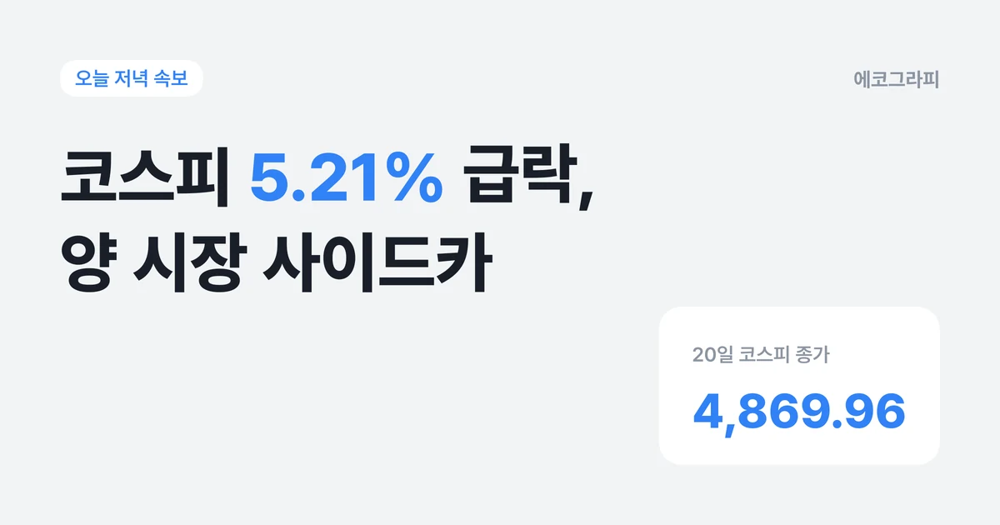
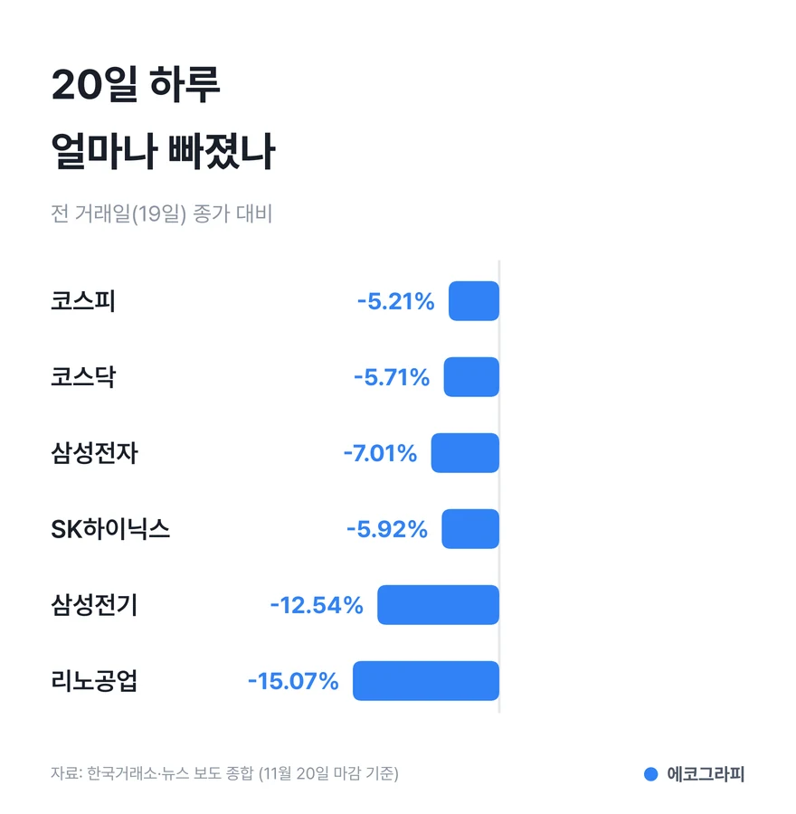
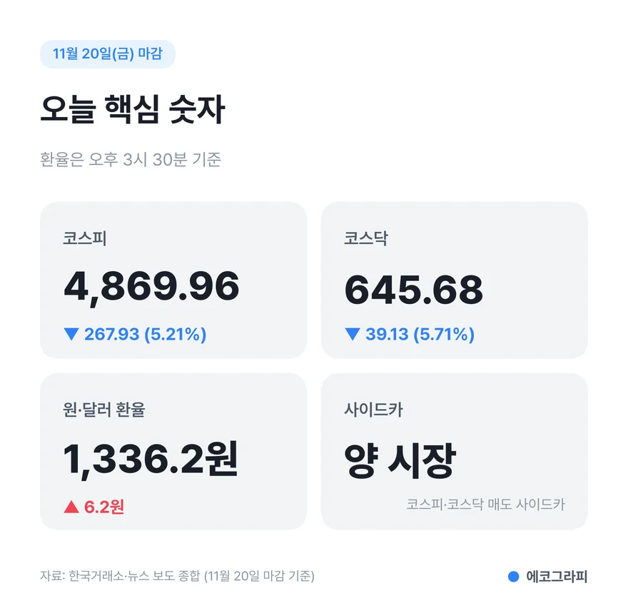

코스피는 아침부터 4% 넘게 빠진 채 문을 열었어요. 낮 11시 54분쯤 코스피200 선물이 5% 넘게 떨어진 상태가 1분 이상 이어지자 매도 사이드카가 걸렸고, 오후에는 코스닥에도 매도 사이드카가 발동됐어요. 코스피는 오후 2시 반쯤 4,831까지 밀렸다가 267.93포인트(5.21%) 내린 4,869.96에 끝났어요. 종가 기준으로 약 10개월 만에 가장 낮은 수준이라는 보도가 나왔어요.
출발점은 밤사이 미국 시장이에요. 앤트로픽이 나스닥에 상장하며 역대 최대 규모의 공모를 마쳤지만, 오히려 돈이 기존 대형 기술주에서 빠져나갔다는 해석이 나왔어요. 엔비디아(-3.3%), 아마존·알파벳(3%대 하락) 등이 약세였고, AMD는 공매도 리포트 영향으로 7%대 급락했어요. 엔비디아 실적이 좋았는데도 사려는 힘이 약했다는 분석도 있었어요.
이 분위기가 반도체 비중이 큰 우리 시장으로 그대로 넘어왔어요. 삼성전자와 SK하이닉스가 6~7% 빠졌고, 코스닥에서는 반도체 장비·부품주가 10% 넘게 떨어진 종목이 많았어요. 사흘 전 반등을 이끈 업종이 이번엔 하락을 이끈 셈이에요.


최근 흐름을 같이 보면, 코스피는 16일에도 3.59% 급락했다가 19일 5,137까지 회복했어요. 하지만 오늘 하루 만에 그 회복분을 모두 내주고 더 내려갔어요.
하루 5% 넘는 하락은 1년에 몇 번 없는 큰 움직임이에요. 이번 주에만 코스피가 3% 넘게 빠진 날이 두 번이에요. 그만큼 우리 시장이 미국 AI·반도체 흐름에 민감하게 움직이고 있다는 뜻이에요.
외국인과 기관이 함께 판 점도 눈여겨볼 만해요. 개인이 사들였지만 하락을 막지는 못했어요. 반면 환율은 6원 정도 오르는 데 그쳐, 외환시장은 주식시장만큼 크게 흔들리지 않았어요. 정부나 한국은행의 긴급 대응 발표는 아직 나오지 않았어요.
한 줄 정리: 오늘 급락은 "미국 AI·반도체주 약세 → 외국인·기관 매도 → 반도체 대형주 급락"이 이어진 결과예요. 국내 경제에 새로 생긴 사건보다는 해외 기술주 흐름의 영향이 컸어요.
오늘 해볼 것: 하루 5% 하락이 내 계좌에서 얼마였는지 금액으로 확인해 보세요. 그 금액이 견딜 만했는지가 내 위험 비중을 점검하는 가장 쉬운 기준이에요.
주말 아침 한 주 정리 글에서 이번 주 흐름과 함께 이어서 정리할게요.
선물 가격이 크게 움직일 때 프로그램 매매(컴퓨터 자동 주문)를 5분 동안 멈추는 장치예요. 코스피는 코스피200 선물이 5% 이상 움직여 1분 넘게 이어지면 걸려요. 하루 한 번만 발동돼요.
아니요. 서킷브레이커는 지수가 8% 이상 떨어지면 시장 전체 거래를 멈추는 장치인데, 오늘은 발동되지 않았어요.
외국인과 기관이 그보다 더 많이 팔았기 때문이에요. 특히 반도체 대형주에 매도가 몰리면서 지수가 크게 내려갔어요.
알 수 없어요. 급락 다음 날 반등하는 경우도, 하락이 이어지는 경우도 모두 있어요. 미국 기술주 흐름과 외국인 수급을 함께 보는 게 좋아요.
※ 2026년 11월 기준으로 정리한 글입니다. 세율·제도는 바뀔 수 있으니 거래 전 증권사·국세청 안내를 한 번 더 확인하세요. 특정 종목·상품의 매수·매도 권유가 아닙니다.